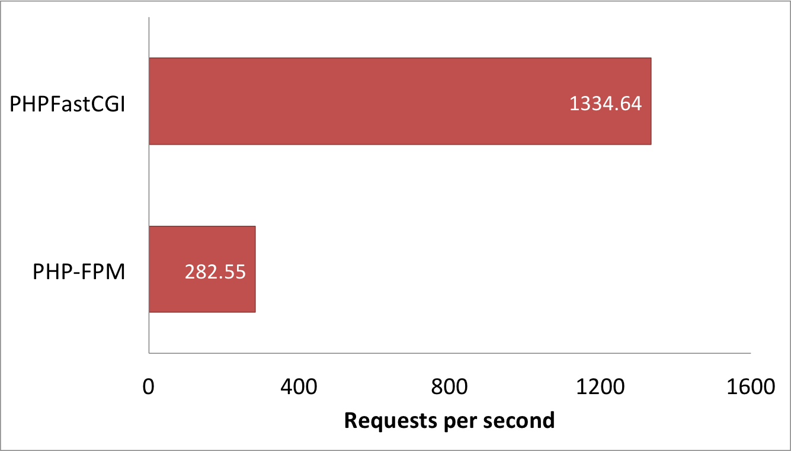

Breaking Boundaries with FastCGI
@AndrewCarterUK
This Talk
30% conceptual
30% warnings
30% plugging a personal project
8% looking to the future
4% poor maths and misleading benchmarks
Why Application Performance?
We might want to increase capacity
We might want to improve user experience
Performance requires efficiency
Minimise work performed to create a response
An Analogy
HTTP Pipeline - as a Restaurant
| Client |  |
Customer |
|---|---|---|
| Server |  |
Restaurant |
| Request |  |
Order |
| Response |  |
Food |
| Application |  |
Chef |
| HTTP Daemon |  |
Waiter/Waitress |
Restaurant PHP
|
Customer enters restaurant | |
|
Waitress takes order |
|
|
Waitress creates chef and gives order |
|
|
Chef makes food |
|
|
Waitress gives food to customer |
|
|
Waitress brutally murders chef |

|
The Proposal?
Don't kill the chef
Make application handle multiple requests
Problems
What if our chef gets sick?
What if our application encounters an issue that prevents it from responding to requests?
Solution #1
Kill the chef...
...occasionally?
Configure application to keep instances fresh
'N' requests or seconds before termination
Solution #2

Use a better chef
What makes a bad chef?
Memory Meltdown
Chef never forgets... anything
Chef can only remember so much
Chef's head explodes
Remove references to unrequired objects
What might hide references?
ORMs
Loggers
$em = $this->getDoctrine()->getManager();
$repository = $em->getRepository('Bundle:Page');
$page = $repository->find($id);
$response = $this->render(
'Bundle:Default:page.html.twig',
['page' => $page]
);
$em->detach($page);
return $response;
Timeouts
Chef forgets how to breathe after a couple of hours
Chef needs to breathe
ERROR 2006: MySQL server has gone away
Tantrum Handling
Chef encounters minor issue
Chef throws big tantrum
Distinguish between request errors and application errors
Let the application die if recovery is not possible
New Menu
We want to add fajitas to the menu
Antonio can only cook pizza and pasta
Bring in new chef, José
Forget to kill Antonio
Customers keep getting pizza
Remember to kill old Chef(s)
Evil Customer
Evil Alex asks Chef what Chris ordered
Chef tells Alex that Chris ordered pizza
Alex answers Chris's forgot password question
Think like an attacker
Three Golden Rules
-
Separate request and application scope
Services should be application scope
If you need the request stack you're doing it wrong
Do not use static or global variables
-
Only use static methods when stateless
(Or just don't use static methos)
- Srsly: Separate request and application scope
Leaving behind our restaurant...
CGI: Common Gateway Interface
CGI application must be executable by the web server
One instance of our application per request
HTTP request provided via environment variables
HTTP response written to standard output by application
Back in the day...
when I was 3
PHP was just a set of CGI binaries
We can still integrate PHP using CGI
We can also use native web server modules
We can also use PHP-FPM
PHP-FPM?
PHP FastCGI Process manager
FastCGI?
Like CGI... but faster
Making CGI Faster
Wrap our communication in a protocol
Implement this protocol over a socket connection
Keep our application alive between requests!
PHP-FPM
Keeps the PHP interpreter alive between requests using FastCGI
We are still killing our chef
Use FastCGI directly?
With a legacy application?
include 'lib/common.php';
include 'lib/database.php';
$escaped_url = mysql_real_escape_string($_SERVER['REQUEST_URI']);
$result = mysql_query(
'SELECT html ' .
'FROM pages ' .
'WHERE url=\'' . $escaped_url . '\''
);
if (false === $result || !($page = mysql_fetch_assoc($result))) {
header('HTTP/1.1 404 Not Found');
$page = get_404_page();
}
echo $page['html'];
With Symfony?
use Symfony\Component\ClassLoader\ApcClassLoader;
use Symfony\Component\HttpFoundation\Request;
$loader = require_once __DIR__.'/../app/bootstrap.php.cache';
require_once __DIR__.'/../app/AppKernel.php';
$kernel = new AppKernel('prod', false);
$kernel->loadClassCache();
$request = Request::createFromGlobals();
$response = $kernel->handle($request);
$response->send();
$kernel->terminate($request, $response);
The FastCGI protocol
| -> | FCGI_BEGIN_REQUEST | |
| -> | FCGI_PARAMS | |
| -> | FCGI_PARAMS | |
| -> | ... | |
| -> | FCGI_STDIN | |
| -> | FCGI_STDIN | |
| -> | ... | |
| FCGI_STDOUT | <- | |
| FCGI_STDOUT | <- | |
| ... | <- | |
| FCGI_END_REQUEST | <- |
Binary Protocol
pack() unpack()
Or...
PHPFastCGI
A tool for creating command line FastCGI applications
use PHPFastCGI\FastCGIDaemon\ApplicationFactory;
use PHPFastCGI\FastCGIDaemon\Http\RequestInterface;
use Zend\Diactoros\Response\HtmlResponse;
$kernel = function (RequestInterface $request) {
// $request->getServerRequest() PSR-7 object
// $request->getHttpFoundationRequest() HTTP foundation object
return new HtmlResponse('Hello, World!
');
};
$application = (new ApplicationFactory)->createApplication($kernel);
$application->run();
php bin/fastcgi.php run
php bin/fastcgi.php run --port=5000
php bin/fastcgi.php run --port=5000 --host=localhost
php bin/fastcgi.php run [--request-limit=200]
php bin/fastcgi.php run [--memory-limit=50000000]
php bin/fastcgi.php run [--time-limit=3600]
Speedfony Bundle
composer require "phpfastcgi/speedfony-bundle:^0.7"
// app/AppKernel.php
// ...
class AppKernel extends Kernel
{
public function registerBundles()
{
$bundles = array(
// ...
new PHPFastCGI\SpeedfonyBundle\PHPFastCGISpeedfonyBundle(),
);
// ...
}
// ...
php app/console speedfony:run --env=prod
php app/console speedfony:run --env=prod --port=5000
php app/console speedfony:run --env=prod --port=5000 --host=localhost
php app/console speedfony:run --env=prod [--request-limit=200]
php app/console speedfony:run --end=prod [--memory-limit=50000000]
php app/console speedfony:run --env=prod [--time-limit=3600]
How much faster is this?
Benchmarking Application
500 page Symfony application
Single route which selects a random page from database
Renders using Twig
Clears entity repository after each request
Benchmarking System
VMWare Fusion - 2GB RAM - 4 cores (Intel Core i7, 3.4 GHz)
Ubuntu 64-bit Server 15.04
PHP 5.6.4
NGINX
'ab', 50000 requests, concurrency level of 20
Control Test
OPcache enabled
PHP-FPM
First Test
6 worker processes
FastCGI protocol implemented in PHP userland
Second Test
6 worker processes
FastCGI protocol implemented by PHP extension
The Results

Warnings
PHPFastCGI is not yet production ready
No support yet for uploaded files
Do you need it?
Is your application fast enough already?
Why bother with the risk?
PHPFastCGI is a tool for high performance PHP applications
However
Well designed applications should not leak memory
Well designed applications should handle errors properly
PHPFastCGI is very easy to install
Thinking Forward
Application Server
Framework + Server Environment
appserver.io
An Asynchronous Future
React PHP + Icicle
Applications run on an event loop
Controller actions return a response promise
To Conclude
Consider long running processes when developing components and services
FastCGI is designed to allow applications to stay alive between requests
PHP is not designed to allow applications to stay alive between requests
That is possibly why few make the effort to do this
Used carefully, this can break performance boundaries
Any questions?
@AndrewCarterUK
http://joind.in/talk/view/16471
http://phpfastcgi.github.io
http://github.com/PHPFastCGI/FastCGIDaemon
http://github.com/PHPFastCGI/SpeedfonyBundle